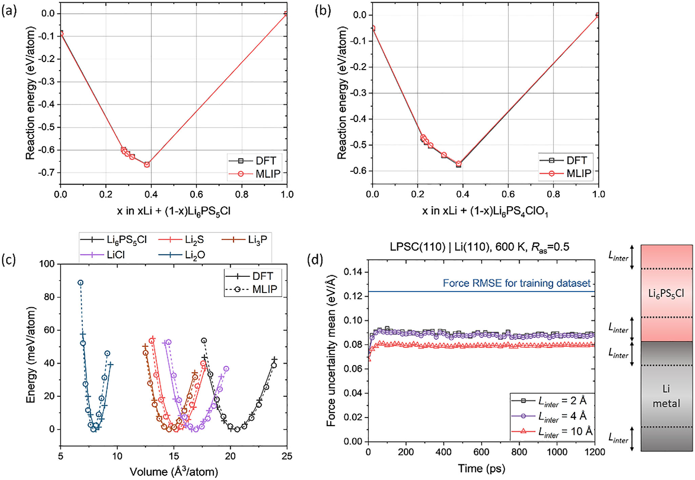
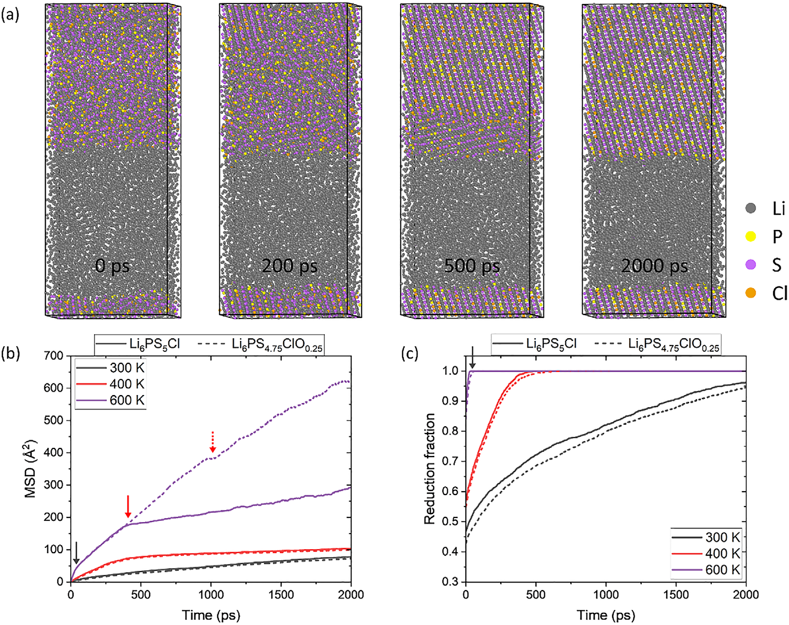
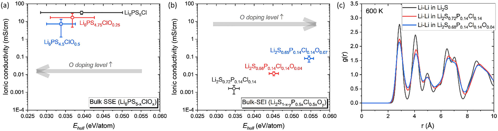
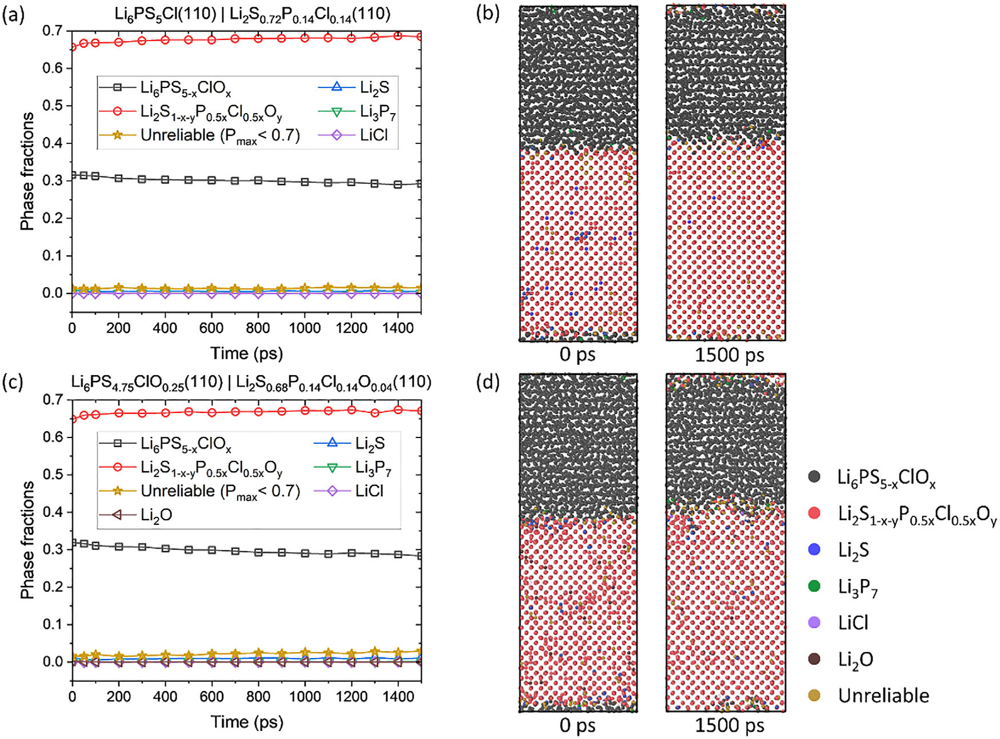
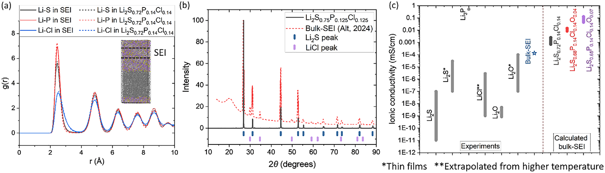
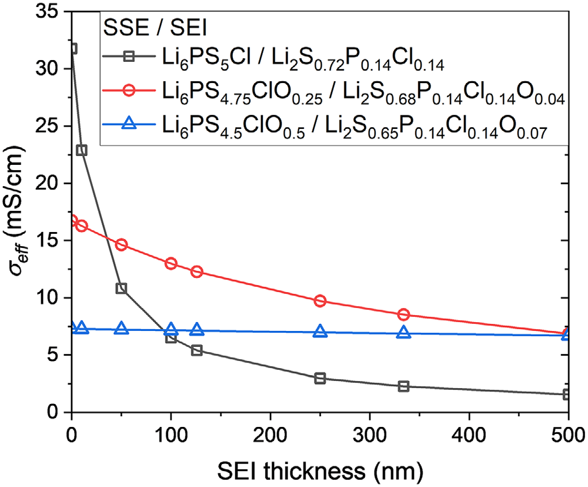

Ringkasan Singkat untuk Peneliti (4 Poin Utama)
1. Identitas Asli Fasa SEI Terkubur: Simulasi MLIP-MD berskala 17.024 atom membuktikan bahwa produk reduksi Li₆PS₅Cl pada anoda Li bukanlah fasa dekomposisi terpisah stoikiometris (Li₂S + LiCl + Li₃P), melainkan fasa kristalin tunggal tersubstitusi anion Li₂S₁₋ₓ₋ᵧP₀.₅ₓCl₀.₅ₓOᵧ akibat keterbatasan kinetika difusi atom P dan Cl.
2. Lonjakan Transpor Ionik Akibat Frustrasi Kisi: Doping oksigen parsial ke dalam SEI menginduksi distorsi lokal kuat karena perbedaan radius ionik O²⁻ yang jauh lebih kecil dibanding S²⁻, menciptakan lanskap energi terfrustrasi yang memacu frekuensi lompatan ion Li hingga konduktivitas ionik naik hampir dua orde magnitudo.
3. Trade-Off Termodinamika & Konduktivitas Ruah: Peningkatan kadar oksigen menurunkan konduktivitas ionik ruah elektrolit padat (bulk SSE) dan meningkatkan energi di atas hull (E_hull), sehingga konsentrasi oksigen yang berlebihan justru merusak stabilitas fasa dan mempercepat pembentukan impuritas.
4. Penjelasan Rasional Efek Non-Monotonik: Analisis konduktivitas efektif tumpukan (σ_eff) membuktikan bahwa doping oksigen moderat (seperti Li₆PS₄.₇₅ClO₀.₂₅ / Li₂S₀.₆₈P₀.₁₄Cl₀.₁₄O₀.₀₄) mencapai kompromi paling optimal, menjelaskan mengapa eksperimen baterai simetris menunjukkan lonjakan masa pakai 5.5 kali lipat hanya pada doping moderat.
1. Dilema Interfasial Baterai Solid-State dan Rintangan SEI Terkubur
Peralihan global menuju elektrifikasi transportasi dan penyimpanan energi berkapasitas besar menuntut baterai generasi baru dengan kerapatan energi teoritis yang jauh melampaui teknologi litium-ion konvensional. Mengganti elektrolit cair yang mudah terbakar dengan elektrolit padat (Solid-State Electrolyte, SSE) memungkinkan integrasi langsung anoda logam litium murni—material anoda dengan kapasitas spesifik tertinggi (3860 mAh/g) dan potensial elektrokimia paling rendah (-3.04 V vs SHE).
Di antara berbagai kandidat elektrolit padat anorganik, kelompok sulfida tipe argyrodite seperti Li₆PS₅Cl menjadi bintang utama berkat konduktivitas ionik suhu ruangnya yang sangat tinggi (1–10 mS/cm), kemudahan pemrosesan mekanik berbasis pelet dingin (cold-pressing), serta modulus geser yang bersahabat untuk meminimalkan hambatan kontak antarbutir (grain boundaries).
Namun, komersialisasi argyrodite terganjal oleh dua hambatan intrinsik yang fatal:
- Sensitivitas Ekstrem terhadap Kelembapan Udara: Ikatan P-S pada anion PS₄³⁻ sangat rentan mengalami hidrolisis saat terpapar uap air lingkungan, melepaskan gas hidrogen sulfida (H₂S) yang sangat beracun dan merusak kerangka kristal konduktif.
- Ketidakstabilan Termodinamika pada Antarmuka Li Metal: Jendela stabilitas elektrokimia intrinsik Li₆PS₅Cl sangat sempit (~1.7–2.3 V vs Li/Li⁺). Begitu bersentuhan langsung dengan anoda logam Li (potensial 0 V), potensial kimiawi Li yang sangat tinggi memicu reduksi spontan, membentuk lapisan antar-fasa padat (Solid Electrolyte Interphase, SEI) yang terkubur (buried interphase).
Secara konvensional, teori termodinamika DFT memprediksi bahwa dekomposisi Li₆PS₅Cl oleh logam Li akan menghasilkan fasa terpisah stoikiometris: Li₂S, Li₃P, dan LiCl. Namun, fasa Li₂S murni memiliki konduktivitas ionik yang sangat buruk (~10⁻⁸ mS/cm), bertindak sebagai penghambat masif perpindahan ion litium yang memicu polarisasi tegangan, pertumbuhan dendrit litium, dan korsleting sel.
Mengetahui struktur mikro riil, komposisi lokal, serta sifat transpor SEI secara eksperimental teramat sulit karena antarmuka ini terkubur di dalam sel tertutup dan sangat reaktif terhadap berkas instrumen mikroskopi elektron. Di sinilah simulasi komputasi multiskala berperan krusial.
Berdasarkan teori asam-basa keras dan lunak (Hard and Soft Acids and Bases, HSAB), substitusi anion lunak S²⁻ atau kation P⁵⁺ dengan spesi yang lebih keras seperti O²⁻ terbukti efektif meningkatkan ketahanan udara sulfida. Namun, bagaimana doping oksigen (Li₆PS₅₋ₓClOₓ) memengaruhi reaksi interfasial dengan anoda Li metal dan sifat transpor SEI yang terbentuk hingga kini masih menjadi tanda tanya besar.
2. Potensial Interatomik SevenNet dan Presisi Gaya Antarmuka Skala Kuantum
Simulasi Ab Initio Molecular Dynamics (AIMD) konvensional berbasis Teori Fungsional Kerapatan (DFT) terbatas pada ratusan atom dengan durasi puluhan pikodetik karena beban komputasi penskalaan kubik O(N³). Skala tersebut terlampau kecil untuk menangkap fenomena interfasial reaktif yang melibatkan ribuan atom dan proses nukleasi kristal yang membutuhkan durasi nanodetik.
Untuk mengatasi rintangan ini, Dr. Byungju Lee dan tim peneliti di KIST mengadopsi SevenNet, model potensial interatomik berbasis Graph Neural Network (GNN) yang mengimplementasikan arsitektur ekuivarian rotasi dan translasi 3 dimensi E(3) (NequIP). SevenNet dilatih secara ekstensif menggunakan dataset konfigurasi atomik AIMD antarmuka dan fasa ruah terdistorsi yang dihitung menggunakan fungsional presisi tinggi optB88-vdW pada paket VASP.

Model SevenNet yang terlatih mencatatkan metrik akurasi kuantum yang luar biasa:
- Root Mean Square Error (RMSE) Energi: 7.3 meV/atom (training set) dan 7.0 meV/atom (validation set).
- RMSE Gaya Atomik: 0.124 eV/Å (training set) dan 0.135 eV/Å (validation set).
- Ketidakpastian Gaya Antarmuka (Ensemble Uncertainty): Rata-rata deviasi gaya antar 5 model independen di zona kontak antarmuka selalu stabil di bawah 0.1 eV/Å melintasi ketebalan 2 s/d 10 Å yang mencakup hingga 4.773 atom (Gambar 1d).
Sebagaimana diilustrasikan pada Gambar 1c, kurva persamaan keadaan (EOS) MLIP mampu mereproduksi profil deformasi volume besar dari fasa-fasa kristalin Li₆PS₅Cl, Li₂S, Li₃P, LiCl, hingga Li₂O. Kemampuan ini membuktikan keandalan model dalam mengakomodasi fluktuasi kerapatan lokal masif yang tak terhindarkan selama reaksi reduksi interfasial berlangsung.
3. Tiga Rezim Difusi Kinetika dan Efek Penundaan Kristalisasi SEI
Berbekal SevenNet MLIP, tim peneliti melakukan simulasi dinamika molekuler berskala besar pada antarmuka kristal Li₆PS₅₋ₓClOₓ(110) | Li(110) (dengan variasi doping oksigen x = 0.0, 0.25, 0.5) di bawah ansambel NPT pada tekanan 1000 bar dan rentang suhu 300, 400, hingga 600 K. Ukuran supercell antarmuka mencapai 17.024 atom, memberikan resolusi statistik yang belum pernah tercapai sebelumnya.

Analisis perpindahan kuadrat rata-rata (Mean Squared Displacement, MSD) pada ion-ion litium asal elektrolit (mengecualikan atom Li dari logam anoda) pada suhu 600 K secara transparan mengungkap eksistensi tiga rezim difusi kinetika yang sangat teratur:
| Rezim Kinetika | Rentang Waktu (600 K) | Karakteristik Fisika & Kimiawi | Status Fraksi Reduksi (f_r) |
|---|---|---|---|
| 1. Rezim Difusi Cepat (Fast) | 0 – 40 ps | Dekomposisi destruktif cepat akibat injeksi elektron bebas dari logam Li ke kerangka fosfor argyrodite. | 0.30 → 1.00 (Reduksi tuntas P⁵⁺ ke P³⁻) |
| 2. Rezim Difusi Moderat | 40 – 400 ps (Undoped) 40 – 1050 ps (O-doped) |
Reorganisasi susunan atomik amorf, eliminasi cacat, dan nukleasi kristal fasa padat baru. | f_r = 1.00 (Konstan tereduksi penuh) |
| 3. Rezim Difusi Lambat (Slow) | >400 ps (Undoped) >1050 ps (O-doped) |
Transportasi ionik tunak (steady-state) di dalam kerangka kisi SEI yang telah mengkristal kokoh. | Fasa SEI terkristalisasi stabil hingga 2000 ps |
Fraksi reduksi kimiawi elektrolit didefinisikan secara kuantitatif melalui pemutusan ikatan koordinasi anion di sekitar atom fosfor:
Di mana N(PS_x) adalah jumlah atom fosfor yang dikoordinasikan oleh x atom anion (S atau O) dalam radius pemotongan 3 Å, dan Z adalah total satuan rumus elektrolit. Menariknya, penambahan oksigen tidak mengubah kecepatan reduksi kimiawi (fraksi f_r mencapai 1.0 pada waktu yang sama, yaitu ~40 ps pada 600 K dan ~400 ps pada 400 K).
Namun, oksigen secara dramatis menunda kinetika kristalisasi. Pada antarmuka tanpa oksigen, kristalisasi SEI rampung pada ~400 ps. Sebaliknya, pada sistem berdoping oksigen Li₆PS₄.₇₅ClO₀.₂₅, penataan kisi berlangsung jauh lebih lambat dan baru mencapai konvergensi penuh pada ~1050 ps (ditandai panah merah putus-putus pada Gambar 2b).
Yang paling mengejutkan: setelah SEI sepenuhnya terkristalisasi (>1050 ps), kemiringan kurva MSD ion Li pada sistem berdoping oksigen justru jauh lebih curam daripada sistem tanpa doping! Ini adalah bukti langsung bahwa SEI yang mengandung oksigen memiliki difusivitas ionik litium yang jauh lebih tinggi.
4. Klasifikasi Fase Berbasis GNN: Terungkapnya Fasa Li₂S Tersubstitusi Anion
Untuk mengidentifikasi fasa-fasa kristalin apa saja yang sebenarnya menyusun SEI secara objektif, para penulis merancang model klasifikasi pembelajaran mesin berbasis representasi lingkungan atomik lokal. Dari model SevenNet, vektor node embeddings atom litium pada lapisan tersembunyi terakhir diekstraksi sebagai fitur representasi geometri dan kimiawi, lalu dilatih menggunakan Multi-Layer Perceptron (MLP) dua lapis dengan fungsi aktivasi ReLU (Gambar 3a).
Model klasifikasi ini mencapai akurasi macro-F1 score sebesar 0.9972 pada test set. Basis data pelatihan mencakup seluruh fasa dekomposisi biner Materials Project (Li₂S, Li₃P, LiCl, Li₂O) serta fasa larutan padat tersubstitusi berbasis Li₂S (Li₂S₁₋ₓP₀.₅ₓCl₀.₅ₓ).

Penerapan model klasifikasi ini menghasilkan penemuan ilmiah yang sangat fundamental:
Termodinamika kesetimbangan konvensional memprediksi bahwa reduksi Li₆PS₅Cl oleh Li akan menghasilkan produk dekomposisi terpisah: Li₂S + LiCl + Li₃P. Namun, pemisahan fasa makroskopis LiCl dan Li₃P murni menuntut migrasi dan pengelompokan (aggregation) atom P dan Cl melintasi jarak jauh.
Simulasi membuktikan bahwa pada suhu 600 K sekalipun, atom P dan Cl bersifat nyaris tidak bergerak (virtually immobile). Akibatnya, alih-alih membentuk fasa terpisah, sistem terkunci secara kinetik membentuk fasa larutan padat kristal tunggal berstruktur Li₂S di mana atom S sebagian digantikan oleh P, Cl, dan O secara acak: Li₂S₁₋ₓ₋ᵧP₀.₅ₓCl₀.₅ₓOᵧ (disebut sebagai bulk-SEI).
Fenomena serupa terjadi pada doping oksigen (Gambar 3d): oksigen tidak tersegregasi menjadi fasa oksida terpisah seperti Li₂O, melainkan larut sempurna ke dalam subkisi anion Li₂S bersama atom P dan Cl.
Selain itu, perbandingan antara antarmuka dengan rasio cacat anti-site R_as = 0 (tanpa pertukaran posisi S 4d dan Cl 4a) dan R_as = 0.5 (Gambar 3b vs 3c) membuktikan bahwa kinetika reaksi antarmuka sama sekali tidak dipengaruhi oleh rasio anti-site ruah. Begitu elektrolit tereduksi oleh logam Li, sifat transpor interfasial sepenuhnya ditentukan oleh struktur fasa SEI substitusional yang baru terbentuk, bukan lagi oleh cacat kisi elektrolit induknya.
5. Lonjakan Dua Orde Konduktivitas Ionik SEI dan Trade-off Termodinamika E_hull
Setelah mengidentifikasi bahwa Li₂S₁₋ₓ₋ᵧP₀.₅ₓCl₀.₅ₓOᵧ adalah fasa penyusun utama SEI, para penulis merekonstruksi supercell fasa ruah SEI (Li₂S₀.₇₂₋ₓP₀.₁₄Cl₀.₁₄Oₓ) untuk mengevaluasi koefisien difusi dan konduktivitas ioniknya pada suhu ruang (300 K) melalui ekstrapolasi hubungan Arrhenius dari simulasi pada 600, 700, dan 800 K.

Perbandingan antara perilaku elektrolit induk (SSE) dan fasa SEI memperlihatkan kontras yang sangat tajam:
- Perilaku Elektrolit Induk (Bulk SSE, Gambar 4a): Penambahan oksigen ke dalam kisi Li₆PS₅Cl justru menyebabkan sedikit penurunan konduktivitas ionik ruah. Hal ini sangat konsisten dengan temuan eksperimen terdahulu oleh Indrawan dkk. (2023).
-
Perilaku Fasa Antarmuka (Bulk-SEI, Gambar 4b): Sebaliknya, pada fasa SEI substitusional, doping oksigen memicu lonjakan konduktivitas ionik yang luar biasa:
- Pada kadar x = 0.04 (Li₂S₀.₆₈P₀.₁₄Cl₀.₁₄O₀.₀₄): konduktivitas ionik melonjak satu orde magnitudo dibanding SEI murni tanpa oksigen.
- Pada kadar x = 0.07 (Li₂S₀.₆₅P₀.₁₄Cl₀.₁₄O₀.₀₇): konduktivitas ionik melonjak hampir dua orde magnitudo mendekati angka ~10⁻¹ mS/cm.
Mengapa oksigen melipatgandakan difusi ion Li di dalam SEI? Analisis Radial Distribution Function (RDF, Gambar 4c) memberikan jawabannya:
Radius ionik O²⁻ (1.40 Å) jauh lebih kecil daripada S²⁻ (1.84 Å) dan Cl⁻ (1.81 Å). Penyusupan anion O ke dalam subkisi Li₂S menggeser puncak jarak Li-O ke jarak yang jauh lebih pendek, mendistorsi kerangka koordinasi tetrahedron di sekitarnya.
Distorsi lokal yang kuat ini menciptakan lanskap energi potensial yang terfrustrasi (frustrated energy landscape). Hambatan energi antar-situs lompatan (hopping barrier) menjadi bervariasi dan tidak lagi simetris kaku, membuka ragam jalur difusi baru yang memungkinkan ion Li melompat dengan frekuensi yang jauh lebih tinggi dibanding kisi Li₂S simetris biasa.
Namun, penelitian ini juga mengungkap hukum trade-off termodinamika: seiring melonjaknya konduktivitas ionik, nilai energi di atas hull (E_hull) dari fasa SEI juga meningkat tajam dari ~0.038 eV/atom ke ~0.057 eV/atom (Gambar 4b). Artinya, kestabilan termodinamika fasa SEI semakin berkurang. Jika doping oksigen diberikan secara berlebihan, SEI akan menjadi tidak stabil dan rentan terurai menjadi impuritas yang merugikan.
6. Pasivasi Elektronik, Validasi XRD, dan Rekayasa Konduktivitas Tumpukan
Agar SEI dapat berfungsi sebagai lapisan pasivasi sejati, ia wajib memenuhi satu syarat mutlak: menjadi penyekat elektronik (electronic insulator). Jika elektron dari logam Li dapat bocor dan menembus SEI menuju elektrolit, reduksi kimiawi akan terus berlangsung tanpa henti hingga elektrolit habis terkonsumsi.
Perhitungan struktur pita elektronik menggunakan fungsional hibrida Heyd-Scuseria-Ernzerhof (HSE06) mengonfirmasi bahwa fasa model SEI murni (Li₂S₀.₇₅P₀.₁₂₅Cl₀.₁₂₅) dan berdoping oksigen (Li₂S₀.₆₈₈P₀.₁₂₅Cl₀.₁₂₅O₀.₀₆₂) merupakan semikonduktor celah lebar dengan nilai celah pita masing-masing sebesar 2.70 eV dan 2.68 eV tanpa kerapatan keadaan (DOS) di tingkat Fermi.

Untuk membuktikan pasivasi kinetik ini secara dinamis, tim peneliti merekayasa antarmuka kontak langsung antara lapisan SEI dengan elektrolit padat (SEI | SSE) dan menyimulasikannya pada suhu 600 K selama 1.5 nanodetik (Gambar 5). Hasil klasifikasi fasa menunjukkan bahwa wilayah elektrolit Li₆PS₅₋ₓClOₓ tetap utuh dan stabil tanpa mengalami degradasi, membuktikan bahwa lapisan SEI fasa tunggal ini efektif mengunci transfer massa dan elektron.
Konfirmasi Eksperimental Pola Difraksi Sinar-X (XRD) & RDF
Keberadaan fasa SEI Li₂S₁₋ₓP₀.₅ₓCl₀.₅ₓ bukan sekadar artefak simulasi komputer, melainkan terkonfirmasi secara presisi oleh data eksperimen laboratorium independen.

Pada riset penting yang dipublikasikan oleh Alt dkk. di jurnal Joule (2024), sintesis langsung fasa ruah SEI dari reaksi serbuk Li₆PS₅Cl dan logam Li menghasilkan pola XRD di mana fasa Li₂S mendominasi hingga 89 wt.% dengan puncak Bragg yang melebar. Sebagaimana tampak pada Gambar 6b, pola XRD terhitung dari struktur DFT Li₂S₀.₇₅P₀.₁₂₅Cl₀.₁₂₅ bersesuaian sangat identik dengan data eksperimen tersebut, membuktikan bahwa kisi kristal dasar SEI memang berupa kerangka Li₂S yang mengikat larutan padat P dan Cl.
Model Tumpukan Seri & Konduktivitas Efektif (σ_eff)
Untuk menghubungkan konduktivitas ionik mikroskopis dengan kinerja baterai makroskopis, antarmuka dimodelkan sebagai dua konduktor ionik yang tersusun secara seri sepanjang arah tegak lurus bidang elektroda:

Analisis pada Gambar 7 mendemonstrasikan prinsip rekayasa yang sangat elegan:
- Pada kondisi ideal tanpa SEI (d_SEI = 0), elektrolit murni Li₆PS₅Cl memang memiliki konduktivitas tertinggi (~28 mS/cm). Namun, begitu lapisan SEI terbentuk bahkan hanya setebal puluhan nanometer, nilai σ_eff anjlok tajam karena SEI murni bertindak sebagai hambatan leher botol (transport bottleneck).
- Pada sistem berdoping oksigen moderat (Li₆PS₄.₇₅ClO₀.₂₅ / Li₂S₀.₆₈P₀.₁₄Cl₀.₁₄O₀.₀₄), penurunan konduktivitas ruah elektrolit yang sedikit (~20 mS/cm) terbayar lunas oleh melonjaknya konduktivitas lapisan SEI. Hasilnya, sistem ini mempertahankan konduktivitas efektif tertinggi di atas seluruh sistem lain pada rentang ketebalan SEI 50 hingga 500 nm.
- Pada sistem doping oksigen tinggi (Li₆PS₄.₅ClO₀.₅), resistansi SEI memang paling kebal terhadap pertambahan tebal, namun konduktivitas ruahnya yang anjlok membatasi performa keseluruhan sel.
Temuan komputasi atomistik oleh Sojeong Yang dan Byungju Lee dkk. ini berhasil mengurai teka-teki perilaku non-monotonik yang selama ini membingungkan para peneliti eksperimen baterai:
Mengapa doping oksigen pada konsentrasi moderat (5%) menghasilkan ketahanan siklus 197 putaran (5.5 kali lipat lebih awet), sedangkan konsentrasi 10% justru merosot ke 52 putaran? Jawabannya terletak pada keseimbangan trade-off: oksigen moderat melipatgandakan laju difusi ion Li pada SEI tanpa mengorbankan stabilitas fasa dan konduktivitas ruah secara berlebihan.
Penelitian ini membuktikan bahwa masa depan desain elektrolit padat tidak boleh hanya terpaku pada angka konduktivitas ruah (bulk SSE), melainkan wajib mengoptimalkan sifat kinetika dan termodinamika fasa SEI yang terbentuk di antarmuka anoda logam litium.
Yang, S., Kang, S., Yadegarifard, A., Lee, H.-J., Artrith, N., Lee, J.-H., & Lee, B. (2026). Enhanced Ionic Conductivity at the Solid Electrolyte Interphase of Oxygen-Doped Li6PS5Cl. Advanced Science, e76563. https://doi.org/10.1002/advs.76563